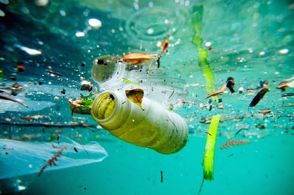

Tipos de contaminación
Existen diferentes tipos de contaminación dependiendo del ámbito en que se produzcan las alteraciones de las condiciones normales para la vida.
Contaminación del agua
La contaminación del agua es una modificación o alteración del agua que tiene consecuencias negativas en el medio ambiente y en los seres vivos. También se utiliza el concepto de contaminación hídrica. El ser humano es el principal responsable de la contaminación del agua, especialmente a través del vertido de aguas residuales, que no han sido tratadas y que proceden de actividades como la industria, la ganadería y la agricultura, en dicho medio. Se pueden distinguir tres tipos de agentes contaminantes del agua: físicos, químicos y biológicos.

Contaminación del aire
La contaminación del aire es la existencia de partículas sólidas, líquidas y gases perjudiciales para los seres vivos y el entorno. En ocasiones, se utilizan términos semejantes como contaminación atmosférica. La contaminación del aire puede provocar graves problemas de salud a través de la inhalación de sustancias tóxicas. Puede proceder de fuentes naturales como, por ejemplo, la erupción de un volcán, o de la acción del ser humano. Algunas de estas sustancias contaminantes del aire son el monóxido de carbono, el ozono y el metano. El smog, una especie de niebla formada por una mezcla de humo y partículas en suspensión, es una evidencia de la contaminación del aire en las ciudades industriales.
Contaminación del suelo
La contaminación del suelo es la presencia de sustancias que afectan negativamente las características y propiedades del suelo y que provocan desequilibrios físicos, químicos y biológicos que afectan de forma negativa a los seres vivos y el entorno. El suelo se puede contaminar por influencia del aire o del agua, que introduce agentes contaminantes, pero también al acumular o arrojar sustancias nocivas como los fertilizantes. Algunas consecuencias considerables de la contaminación del suelo son el aumento de la erosión y la disminución de la fertilidad del terreno.
Contaminación visual
La contaminación visual es la modificación de un entorno producida por la existencia de uno o varios elementos, cuya presencia impide o perjudica la visibilidad o afecta negativamente la estética de un lugar. La contaminación visual puede tener consecuencias perjudiciales para la salud, como el estrés. Algunos ejemplos de contaminación visual son la acumulación de carteles publicitarios en las carreteras o espacios urbanos, o la construcción de edificios en zonas protegidas.
Contaminación acústica
Como contaminación acústica o sonora se conoce aquella que se produce como consecuencia de las alteraciones que causa el exceso de sonido en las condiciones normales del medio ambiente. La contaminación sonora puede ser provocada por una multitud de actividades humanas, como las asociadas a la industria, la construcción, el comercio, el entretenimiento, el tráfico o los aviones. El ruido excesivo o molesto puede llegar a ser perjudicial para la salud auditiva, física y mental de las personas, así como para la calidad de vida en general y, en consecuencia, debe estar sometida a control.


 2
2 3
3 4
4 5
5 10
10